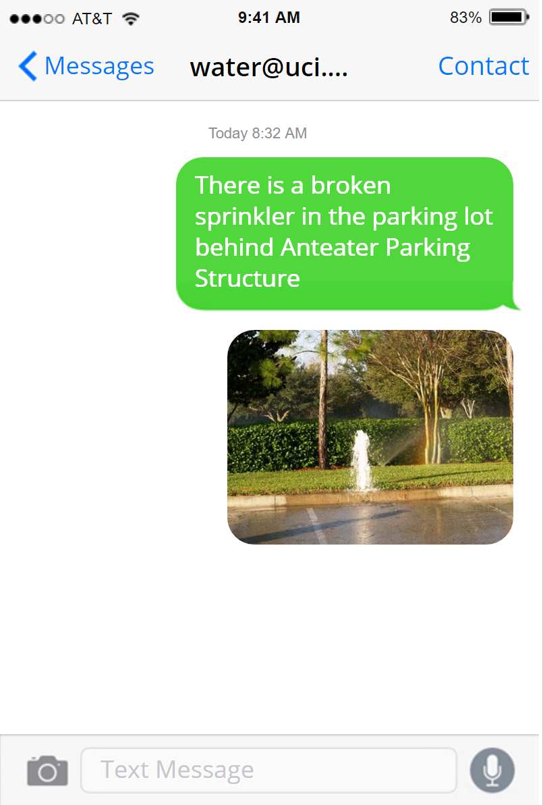

-
WHAT IS THIS?
This is a dashboard of water usage in University of California, Irvine buildings monitored by the Facilities Management Sustainability Team. Each tab depicts a graph of water use, color coded by year. This data is updated at the beginning of each month when water meter readings are inputted.
SEE A WATER PROBLEM? TEXT TO CONSERVE.When you see a water problem, snap a photo and text a description to water@uci.edu. We'll submit a work order and fix it as soon as possible.

Some examples of water problems include broken sprinklers, broken drinking fountains, drinking fountain filter changes, over-watering issues, and even under-watered areas on campus.
Example:
NEED HELP?For questions, more information regarding water usage, or feedback about this site, please contact Isley Gao at jiayueg@uci.edu.
-
ARBORTEUM
The UCI Arboretum is a 12.5-acre botanic garden and research facility located approximately one mile from the University of California, Irvine. The Arboretum features plants and communities from the California Floristic Province and also has an extensive collection of South African species.
Main water consumption: irrigation for plants -
ANTEATER RECREATION CENTER
The Anteater Recreation Center (ARC) is an 89,000-square-foot (8,300-square-meter) indoor gym facility that is part of campus recreation at UCI, open to all UCI students, faculty and staff members, alumni, and other university affiliates.
Main water consumption: pool, showers, toilets, laundry, water fountains, irrigation for fields -
CAMPUS BUILDINGS
These campus buildings from the School of Physical Sciences and Ayala School of Biological Sciences use a large amount of water for lab classrooms and research facilities.
Main water consumption: vivariums, laboratories -
HOUSING
From freshman housing in Middle Earth and Mesa all the way to the off campus apartments, we track their monthly water usage.
Main water consumption: showers, toilets, water fountains, cooking -
OTHER
As we continue to monitor water use around campus, we will be adding new tabs for additional buildings. Check back later for new updates.
In the meantime, take a look at what we're doing on the Facilities Management team HERE!
Alternatively, you can enjoy this gif of a happy elephant:

Last updated: Nov 11, 2016